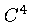
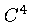
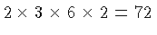
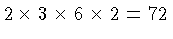

It's interesting to construct  macro schemes on superspline
subspaces of
macro schemes on superspline
subspaces of  . The dimension of
. The dimension of  itself is 545. For
a macro element it is natural to impose  smoothness at the
vertices of the macro tetrahedron. The dimension of the subspace of
itself is 545. For
a macro element it is natural to impose  smoothness at the
vertices of the macro tetrahedron. The dimension of the subspace of
 that has that additional smoothness is 529. The number of
natural data that need to be imposed is 264. The table below lists
all possible combinations of symmetric smoothness conditions that can
be imposed while still making it possible to interpolate to the data.
(The "count" being 264 indicates that all 264 conditions can be
imposed.) The table gives the additional smoothness imposed,
and is sorted by increasing dimension. A range of values like(0-4)
indicates that any number in that range will cause the dimension to
assume the stated value. Thus, for example, there are a total of
 possible sets of supersmoothness
conditions in the first row that give a dimension of 280, and that
are all equivalent.
that has that additional smoothness is 529. The number of
natural data that need to be imposed is 264. The table below lists
all possible combinations of symmetric smoothness conditions that can
be imposed while still making it possible to interpolate to the data.
(The "count" being 264 indicates that all 264 conditions can be
imposed.) The table gives the additional smoothness imposed,
and is sorted by increasing dimension. A range of values like(0-4)
indicates that any number in that range will cause the dimension to
assume the stated value. Thus, for example, there are a total of
 possible sets of supersmoothness
conditions in the first row that give a dimension of 280, and that
are all equivalent.
The table below indicates the limitations of reducing the dimension by imposing (symmetric) supersmoothness. Even though the dimension may still be greater than 264 not all 264 conditions can be imposed.